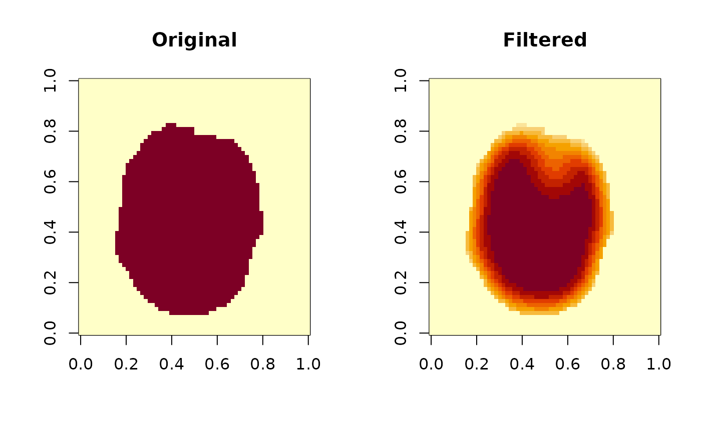

This function applies a guided filter to a volumetric image (3D brain MRI data) to perform edge-preserving smoothing. The guided filter smooths the image while preserving edges, providing a balance between noise reduction and structural preservation.
Arguments
- vol
A
NeuroVolobject representing the image volume to be filtered.- radius
An integer specifying the spatial radius of the filter. Default is 4.
- epsilon
A numeric value specifying the regularization parameter. It controls the degree of smoothing and edge preservation. Default is 0.49 (0.7^2).
Value
A NeuroVol object representing the filtered image.
Details
The guided filter operates by computing local linear models between the guidance image (which is the same as the input image in this implementation) and the output. The 'radius' parameter determines the size of the local neighborhood, while 'epsilon' controls the smoothness of the filter.
The implementation uses box blur operations for efficiency, which approximates the behavior of the original guided filter algorithm.
References
He, K., Sun, J., & Tang, X. (2013). Guided Image Filtering. IEEE Transactions on Pattern Analysis and Machine Intelligence, 35(6), 1397-1409.
Examples
# Load an example brain volume
brain_vol <- read_vol(system.file("extdata", "global_mask_v4.nii", package = "neuroim2"))
# Apply guided filtering to the brain volume
# \donttest{
filtered_vol <- guided_filter(brain_vol, radius = 4, epsilon = 0.49)
# Visualize a slice of the original and filtered volumes
oldpar <- par(mfrow = c(1, 2))
image(brain_vol[,,12], main = "Original")
image(filtered_vol[,,12], main = "Filtered")

par(oldpar)
# }